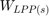
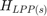
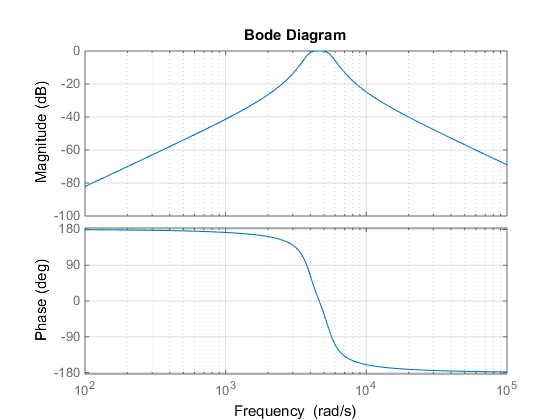
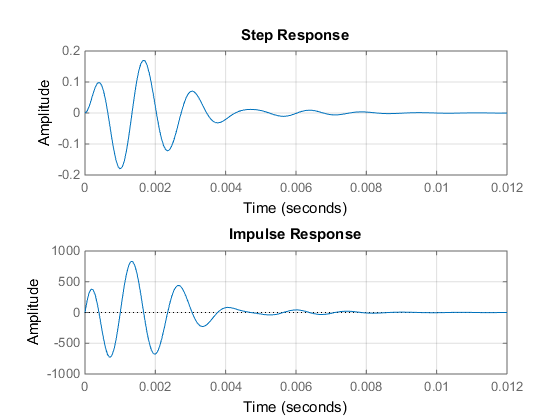
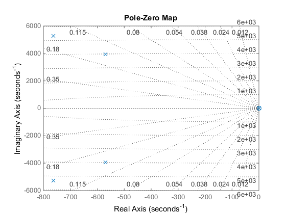

Design Analog Filter
Contents
- STEP 1: Enter filter type and its specifications
- STEP 2: Determine Wa of the low pass filter prototype ()
- STEP 3: Determine the order (N) of the low pass filter prototype
- STEP 4: Determine the transfer function of the lowpass filter prototype  by using Table 9.1
- STEP 5: Determine the transfer function of the given fliter by using Table 9.2
- STEP 6: Plot the transfer function of the given fliter
The most common filter responses are the Butterworth, Chebyshev, and Bessel types. Many other types are available, but 90% of all applications can be solved with one of these three. Butterworth ensures a flat response in the passband and an adequate rate of rolloff. A good "all rounder," the Butterworth filter is simple to understand and suitable for applications such as audio processing. The Chebyshev gives a much steeper rolloff, but passband ripple makes it unsuitable for audio systems. It is superior for applications in which the passband includes only one frequency of interest (e.g., the derivation of a sine wave from a square wave, by filtering out the harmonics).
STEP 1: Enter filter type and its specifications
filter_type = 'BP';
W_u = 5655; W_a_1 = 2*3.14*800; Mdb_1= -0.2;
W_l = 3770; W_a_2 = 2*3.14*200; Mdb_2= 50;
STEP 2: Determine Wa of the low pass filter prototype ()
switch filter_type case 'LP' % Lowpass W_a_p1 = W_a/W_c % WLPp = Wa/Wc case 'HP' % Highpass W_a_p1 = W_c/W_a % WLPp = Wc/Wa case 'BP' % Band pass W_a_p1 = ((W_a_1^2)-(W_u*W_l))/((W_u-W_l)*(W_a_1)) % WLPp = Wa^2 - Wo^2 / B * Wa W_a_p2 = ((W_a_2^2)-(W_u*W_l))/((W_u-W_l)*(W_a_2)) % WLPp = Wa^2 - Wo^2 / B * Wa case 'BS' % Band stop W_a_p1 = ((W_u-W_l)*(W_a_1))/((W_u*W_l)-(W_a_1^2)) % WLPp = B * Wa/ Wo^2 - Wa^2 W_a_p2 = ((W_u-W_l)*(W_a_2))/((W_u*W_l)-(W_a_2^2)) % WLPp = B * Wa/ Wo^2 - Wa^2 end
W_a_p1 =
0.4141
W_a_p2 =
-8.3385
STEP 3: Determine the order (N) of the low pass filter prototype
switch filter_type case {'LP','HP'} % Lowpass & Highpass N = ceil((log10(10^(-(Mdb/10))-1))/(2*log10(W_a_p1))) case {'BP','BS'} % Band pass & Band stop a = ceil((log10(10^(-(Mdb_1/10))-1))/(2*log10(W_a_p1))) b = ceil((log10(10^(-(Mdb_2/10))-1))/(2*log10(W_a_p2))) if(ceil((log10(10^(-(Mdb_1/10))-1))/(2*log10(W_a_p1))) > ceil((log10(10^(-(Mdb_2/10))-1))/(2*log10(W_a_p2)))) N = ceil((log10(10^(-(Mdb_1/10))-1))/(2*log10(W_a_p1))) else N = ceil((log10(10^(-(Mdb_2/10))-1))/(2*log10(W_a_p2))) end end
a =
2
b =
1.0000 + 1.0000i
N =
2
STEP 4: Determine the transfer function of the lowpass filter prototype by using Table 9.1
s = tf('s');
f = s;
t = getTransferFunction(N,f)
t =
1
-----------------
s^2 + 1.414 s + 1
Continuous-time transfer function.
STEP 5: Determine the transfer function of the given fliter by using Table 9.2
switch filter_type case 'LP' % Lowpass f = s/W_c; case 'HP' % Highpass f = W_c/s; case 'BP' % Band pass f = (s^2 + (W_u*W_l)) / ((W_u-W_l)*s); case 'BS' % Band stop f = ((W_u-W_l)*s) / (s^2 + (W_u*W_l)); end t = getTransferFunction(N,f)
t =
6.698e09 s^3
------------------------------------------------------------------
1885 s^5 + 5.025e06 s^4 + 8.707e10 s^3 + 1.071e14 s^2 + 8.568e17 s
Continuous-time transfer function.
STEP 6: Plot the transfer function of the given fliter
plotTransferfunction(t);  